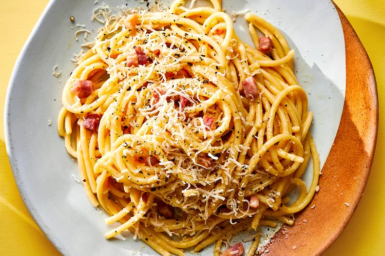

Carbonara Recipe

Ingredients
- 100g spaghetti
- 1 tbsp salt for cooking pasta
- 65g chopped pancetta
- 16g grated parmigiano reggiano cheese
- 16g grated pecorino romano cheese
- 3 egg yolks
- 1/2 teaspoon freshly ground black pepper, more to taste
Instructions
- Put the egg yolks into a bowl, add the grated cheese, pepper, then mix well with a fork and put to one side.
- Place pancetta in a pan over low-medium heat. Cook until golden.
- Add boiled water to a large pot with the salt. Add pasta and cook per the packet directions.
- When the pasta is cooked, add it into the pan and toss to coat in fat.
- Add a few tablespoons of pasta water to the eggs and cheese and stir.
- Quickly pour in the eggs and cheese. Stir the spaghetti and pancetta so it mixes with the egg mixture, which should thicken but not scramble.
- Serve immediately.